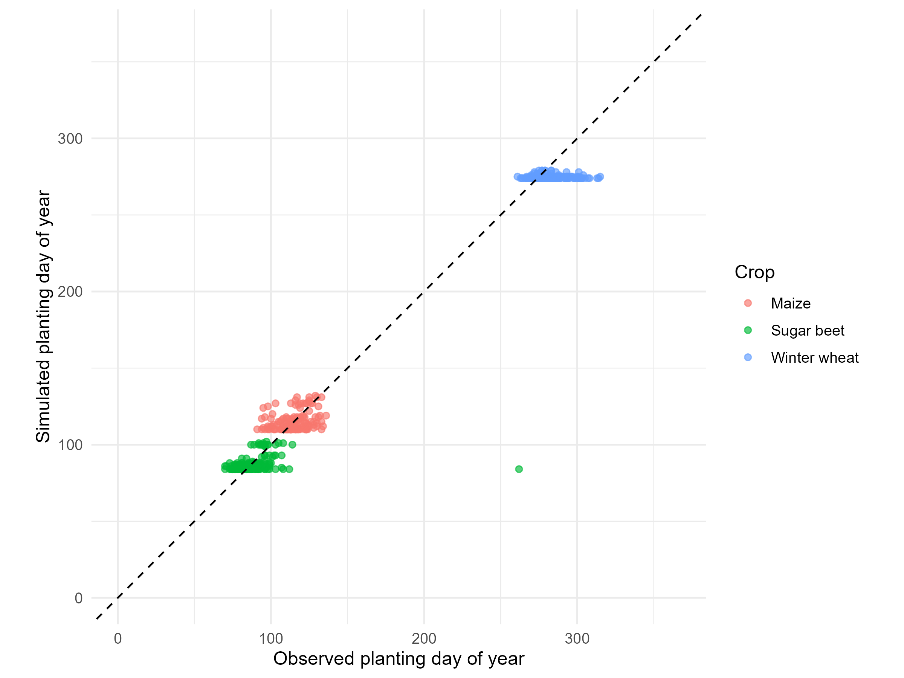
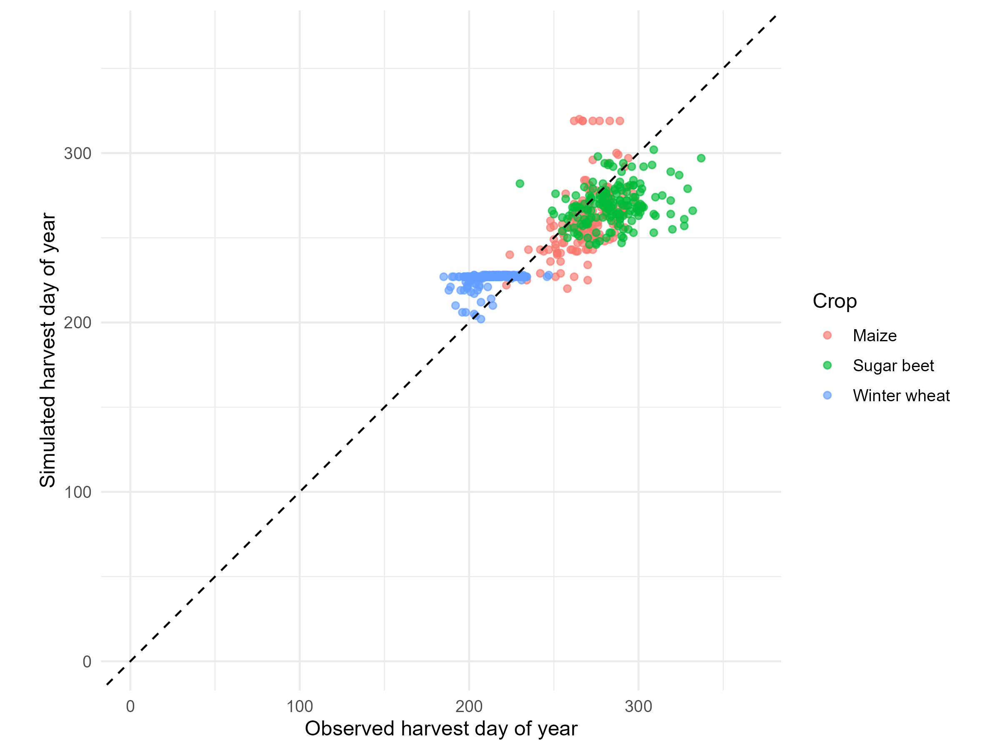
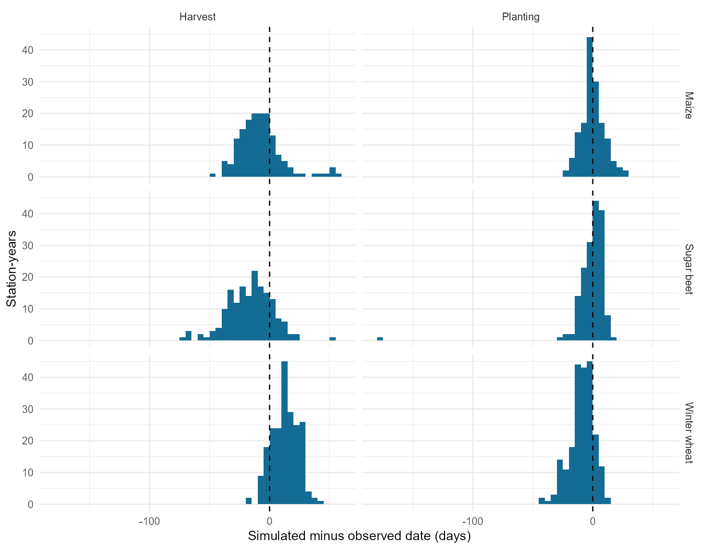

Validation against DWD phenology observations
Source:vignettes/articles/dwd-validation.Rmd
dwd-validation.RmdThermoPheno 0.1.1 was evaluated against observed sowing and harvest dates for maize, sugar beet and winter wheat in Germany. The run and data access date were 22 November 2026.
Site selection and calibration
We used the DWD annual-reporter crop archives through 2024. The analysis selected the DWD objects 215 (maize), 253 (sugar beet) and 202 (winter wheat), and phases 10 (start of sowing) and 24 (harvest). Observations flagged doubtful or incorrect were removed. Multiple reports within a crop, station, harvest year and phase were reduced to the median date. For winter wheat, August to December sowing observations were assigned to the following harvest year.
Within each crop, we ranked phenology stations with coordinates by the number of valid planting–harvest calendars in 1991–2010, breaking ties by station ID. We attempted the first 25 stations with at least three such calendars. Each was matched to the nearest DWD climate station with a historical daily archive and station metadata spanning 1991–2024.
We calibrated one thermal-time requirement per crop and phenology
station using estimate_required_tt_from_observed(). The
requirement is the median of the triangular thermal-time sums between
observed planting and harvest in 1991–2010. Calibration required at
least three seasons with temperature data for at least 95% of the
observed interval and a positive median. The crop
configuration records the temperature thresholds and scheduling
rules.
Held-out evaluation
We simulated planting from daily temperature and the crop’s planting window. Thermal time determined maturity. The configured harvest deadline could trigger forced harvest below maturity. We compared dates with the paired observations for 2011–2024, requiring temperature data for at least 95% of the configured season. A year without an eligible simulated date contributes to the case counts and has no numeric error for that stage.
| Crop | Phase | Paired dates | Bias (days) | MAE (days) | RMSE (days) | R² |
|---|---|---|---|---|---|---|
| Maize | Planting | 152 | 0.29 | 7.17 | 9.58 | 0.097 |
| Maize | Harvest | 152 | −7.34 | 15.33 | 19.58 | 0.251 |
| Sugar beet | Planting | 168 | −0.60 | 7.36 | 15.83 | 0.053 |
| Sugar beet | Harvest | 168 | −15.92 | 19.37 | 24.49 | 0.055 |
| Winter wheat | Planting | 217 | −8.76 | 10.39 | 13.49 | 0.002 |
| Winter wheat | Harvest | 209 | 13.33 | 14.52 | 17.18 | 0.096 |
Bias is simulated minus observed date. R² is the squared Pearson correlation between observed and simulated days of year where both vary, a measure of association. Harvest metrics include forced harvests. Station-years can share climate stations, so the paired counts do not represent independent tests.
The sugar beet planting RMSE is sensitive to one anomalous DWD record. At station 11908 in 2015, the reported sowing date (19 September) falls after the reported emergence date (11 April). DWD flagged the sowing date as having no objections. The main results retain this case under the stated quality filter. Removing that record in a post hoc sensitivity check changes sugar beet planting MAE from 7.36 to 6.34 days and RMSE from 15.83 to 7.90 days (167 paired dates).



Attempted stations and exclusions
| Crop | Attempted station–crop cases | Insufficient calibration | No held-out calendar | At least one paired planting date |
|---|---|---|---|---|
| Maize | 25 | 5 | 1 | 19 |
| Sugar beet | 25 | 1 | 3 | 21 |
| Winter wheat | 25 | 3 | 2 | 20 |
Eight sugar beet and two winter wheat held-out seasons lacked sufficient weather. Eight wheat seasons failed to mature without a simulated harvest date. There were eight forced maize harvests and 174 forced winter wheat harvests. The high frequency of forced wheat harvest and the early sugar beet harvest bias limit the usefulness of these settings for scheduling. The winter wheat calibration sums thermal time over the observed calendar. The winter simulation also applies its vernalization and dormancy rules, which can reduce the thermal time it accumulates over an equivalent interval.
The sample favors stations with long calibration histories. Results describe this subset, crop configuration and climate-station matching procedure.
Reproduce the run
Install ThermoPheno 0.1.1 and run the validation script from the repository root. Use the manifest to verify the DWD inputs.
Source: Deutscher Wetterdienst (DWD), Climate Data Center. The tables and plots use filtered, aggregated observations and model-derived quantities. Historical crop phenology · Historical daily climate observations · DWD CDC terms of use · CC BY 4.0